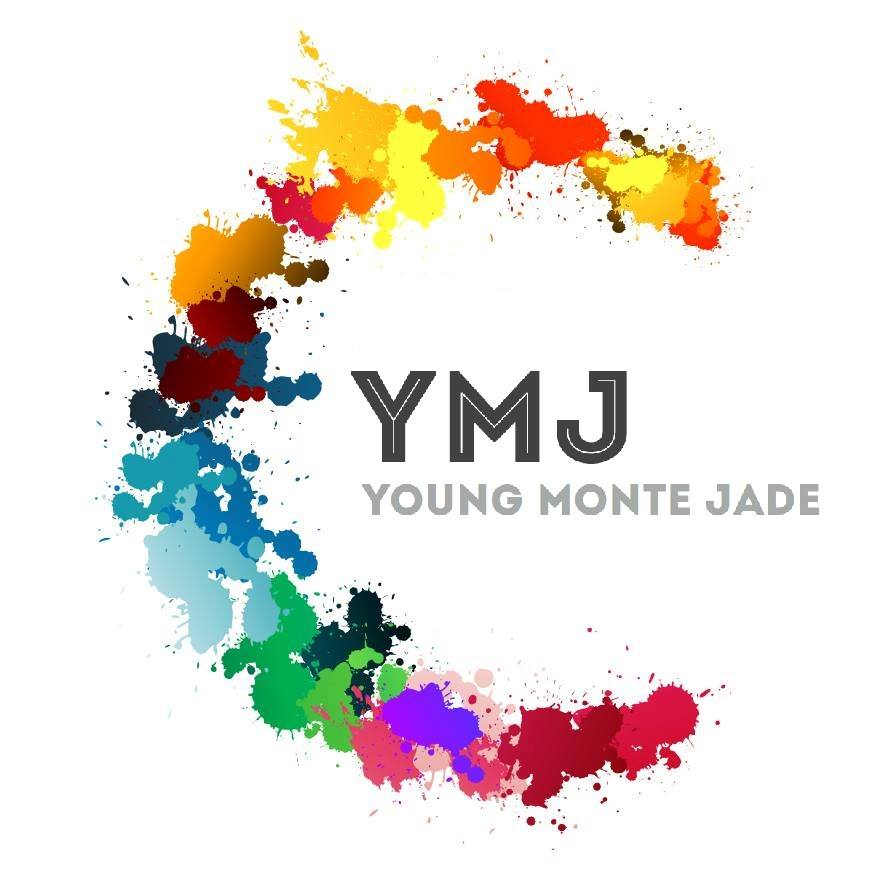

第十一屆玉山青年菁英論壇CTY11的主題為「創思 Chance to change」，透過「創」字代表貫穿CTY營隊的核心價值「創意」、「創新」、「創業」，期許學員能打破成規，培養創意性的思維，跳脫舊有思考的框架、舊有的邏輯思維，不受舒適圈的豢養。主題意義
另外，結合「思」字，希望學員們都能夠更積極地思考，除了培養獨立思考的判斷能力，並透過彼此間相互合作、思考激盪出火花，藉由營期間的各項活動培養勇於突破、革新的精神。
「創思」諧音「Chance」，以「機會」來期許學員把握每一個開闊視野的契機，並與副標題 「Chance to change」相呼應。營隊宗旨
CTY想提供給他們的正是改變自我、走出舒適圈的機會，提供學員了解業界、創業的契機，藉由產學交流、創業競賽等形式，能培養自我學習的意識，得以實際與產業接軌，同時在面對社會能有更宏觀的視野，不斷激勵自我成長。
鼓勵學員們重新思考，在為期五天四夜的營隊中，了解何謂創業、商業模式、idea發想，在團隊合作下完成創業競賽，並在最後一天發表。 而營期間預計將邀請到政、產、學界相關領域權威，理論與實務並重進行授課，以期拓展學員們的世界觀，並激發創意創業熱情。特色
CTY11也將承襲一貫的傳統，邀請來自不同領域、不同背景的優秀菁英學者參與營隊活動，透過精心規劃的活動與課程，讓彼此有互相切磋的機會。 期待能藉由彼此的觀摩學習，促進彼此了解、刺激個人的思考，並且共同成長，進一步為台灣、為這世界做出有用的貢獻。
1990年，「玉山科技協會」於美國聖荷西成立，以台灣第一高峰「玉山」為名，象徵華人企業家源遠流長及追求卓越的精神。2001年，在創會理事長劉兆玄先生號召下，「台灣玉山科技協會」匯集台灣頂尖企業與學術菁英，正式成立，以成為實踐全球華人知識經濟共同體之平台為宗旨。 以協助科技創業、促進企業發展、增進資訊交流及促進投資、人才、技術、市場的合作與商機為發展目標。
結合產學界力量，舉辦跨領域性論壇活動及會議，探討產業合作相關議題外，亦積極打造國際與兩岸交流合作平台。為培育下一代領導菁英，台灣玉山科技協會成立分支機構青年玉山及小玉山，讓年輕一代得以從創新、多元的角度發揮自我價值，擴大學習領域。
小玉山分支機構小玉山分支機構由台灣玉山科技協會實習生所組成，於2010年9月成立，並正式命名為「台灣小玉山分支機構」。而小玉山實習計畫需參與過 CTY玉山青年菁英論壇，並提出申請、繳交簡歷、通過面試，經過一連串之篩選後方可成為小玉山實習生。
小玉山分支機構提供青年學子拓展產業視野，認識產、官、學等優秀人才的機會，幫助自我未來職涯發展與各國分會交流，拓展國際觀，成為傑出的領導者並與世界接軌。 小玉山平時的任務主要有以下四項：
1. 協助台灣玉山科技協會 －日常行政事務及「玉山小聚」、「玉 山年會」等大型交流活動
2.舉辦玉山跨視際青年論壇(Forum for Visionary Youth, FVY)
3.舉辦玉山青年菁英論壇(Center for Talented Youth, CTY)
4.各式專案籌劃與實作
粉絲專頁「YMJ 小玉山 | 台灣玉山科技協會」為小玉山官方的粉絲專頁，定期發布小玉山相關活動訊息，若你對小玉山有興趣，就幫我們按個讚，持續追蹤我們吧！！有任何問題也可以私訊粉專，有專業的小編來回覆您喔～